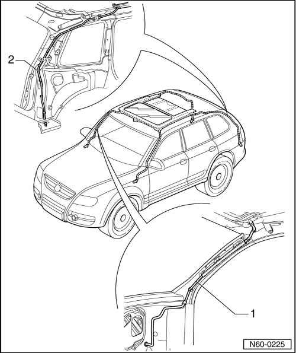

Water Drain Hoses, Cleaning
Sunroof with Glass Panel Overview
Water Drain Hoses, Cleaning
• For cleaning, an assisting tool is recommended, such as a speedometer driveshaft inner cable, approximately. 2300 mm (90.5 in.) long.
Front Water Drain Hoses

The front water drain hoses run through the A-pillars and end at the engine compartment bulkhead. They are cleaned from the sunroof opening.
Rear Water Drain Hoses
The rear water drain hoses - 2 - run through the D-pillars and end in the rear wheel housings. Clean starting from the wheel housing and working outward. The wheel housing liner must be removed for this.